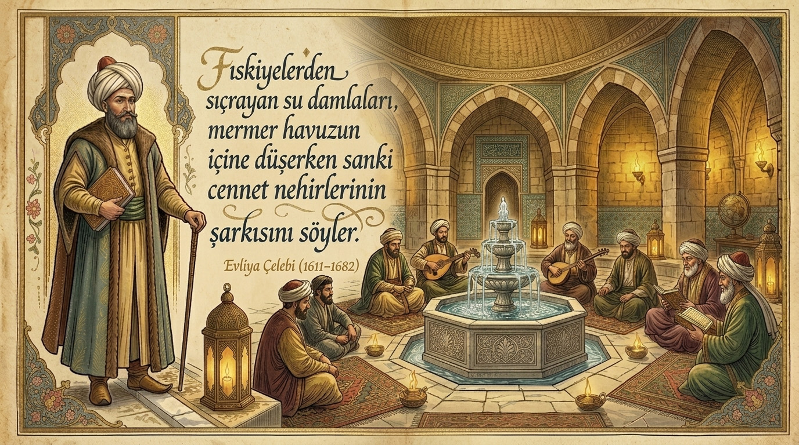

"Seyyah-ı Âlem’in Gözüyle: Sultan II. Bayezid Külliyesi"
1682 yılında Edirne’yi ziyaret eden Evliya Çelebi, külliyeden; “Orada bir Darüşşifa vardır ki dil ile tarif ve kalemler ile yazılmaz” diye bahseder. Ünlü seyyah, ayrıca külliye için şu ilginç tanımlamaları kullanmıştır:
“Adı geçen bağın ortasında, göğe baş uzatmış bir kağir yüksek kubbedir ki güya aydınlık hamam camekanı gibi tepesi açıktır. Bu açık yerde altı adet ince mermer sütunlar üzerinde Kiyanıyan tacı gibi bir kubbecik vardır. San’atkar iş üstadı, bu küçük kubbenin ta tepesine halis altın ile yaldızlanmış bir çeşit demir mil üzerine bir bayrak yapmış, ne taraftan rüzgâr eserse, o bayrak o tarafa döner. Garip görünüşlüdür.”

“Ama aşağı büyük kubbe sekiz köşelidir. Bu kemerli kubbe içinde dahi sekiz kemer vardır. Her kemerin altında bir kış odası vardır. Bu odaların her birinde ikişer pencere vardır. Bir penceresi odanın dışında olan gülistanlı ağaçlığa bakar, diğeri de bu büyük kubbenin ortasındaki büyük havuz ve şadırvana bakar. Bu sekiz adet kış odalarının önünde, yine büyük kubbe içinde sekiz adet yazlık odalar vardır.”
“Üç tarafları kafesli mermerler ile yapılmış bu büyük kubbe altındaki büyük havuzun çevresindeki sel sebillerden berrak su çağlayıp havuza girince, fıskiyelerden berrak su, kemerli kubbenin göbeğinde nihayet bulur. Böyle dikkat ve özenle yapılmış şifa yurdunun anlatılan odalarında çeşitli hastalıklara tutulmuş zengin ve fakir, ihtiyar ve genç doludur.”
“Bazı odalarda ilkbaharda delilik mevsiminde Edirne’nin aşk denizi derinliğine düşmüş sevdalı aşıklar çoğalıp, hekimin emriyle bu tımarhaneye getirilerek altun ve gümüş yaldızlı zincirlerle kerevetlerine takılıp, her biri aslan yatağında yatar gibi kükreyip yatarlar... Kimisi havuz ve şadırvanlara bakıp kalender hülyası kabilinden sözler eder, nicesi dahi o kemerli kubbenin etrafında olan gülistan ve bağ ve bostan içindeki binlerce kuşların cıvıltılarını dinleyip, delilerin perdesiz ve ölçüsüz sesleriyle feryada başlarlar.”
“Bahar mevsiminde çiçek kısmından sim ve zerrin, deveboynu, müşkü rumi, yasemin, gülnesrin, şebboy, karanfil, reyhan, lale, sümbül gibi çiçekler hastalara verilip güzel kokuları ile hastalar iyileştirilirler. Fakat delilere bu çiçekleri verince kimini yerler, kimini ayakları altında çiğnerler. Bazıları dahi meyveli ağaçları seyredip, 'ah daha hel hope pe pohe pelo' deyip, çimenlik temaşası ederler. ...”
Evliya Çelebi, hastanenin musiki ile tedavi konusunu da şu şekilde anlatmıştır: “Merhum ve Mağfur Bayezid Veli Hazretleri Vakıfiyesinde, hastalara deva, dertlere şifa, divanelerin ruhuna gıda ve defi seva olmak üzere 10 adet hanende ve sazende gulan (genç erkek) tayin etmiş ki, üçü hanende, biri neyzen, biri kemancı, biri musikarcı, biri santurcu, biri çengi, biri çeng santurcu, biri udçu olup, haftada 3 kez gelerek hastalara ve delilere musiki faslı ederler. Allah’ın emriyle, nicesi saz sesinden hoşlanır ve rahat ederler.”
“Doğrusu musiki ilminde neva, rast, dügah, segâh, çargâh, suzinak makamları onlara mahsustur. Ama zengule makamı ile buselik makamında rast karar kılsa insana hayat verir. Bütün saz ve makamlarda ruha gıda vardır.”

“Haftada 2 gün macun işyeri (eczane) açılarak Edirne şehrinde ne kadar illetli hasta varsa şifa yurduna gelip nice bin türlü ilacı bol bol alırlar. Diğer ot makulesi (cinsi) devalar hisap dışıdır. Libase, kebabe, kaküle, zencefil, emleç, kebed, murabbanın ne kadar çok dağıtıldığının hesabını Allah bilir.”
| Konu | Evliya Çelebi'nin Gözlemi |
|---|---|
| Mekân Tasviri | "Dil ile tarif ve kalemler ile yazılmaz" bir ihtişam ve sekiz köşeli mimari. |
| Tedavi Metodu | Su sesi, musiki fasılları (rast, neva, segâh) ve aromatik çiçek kokuları. |
| Sosyal Merhamet | Zengin, fakir, genç ve ihtiyar ayırt etmeksizin her dertliye ücretsiz şifa. |